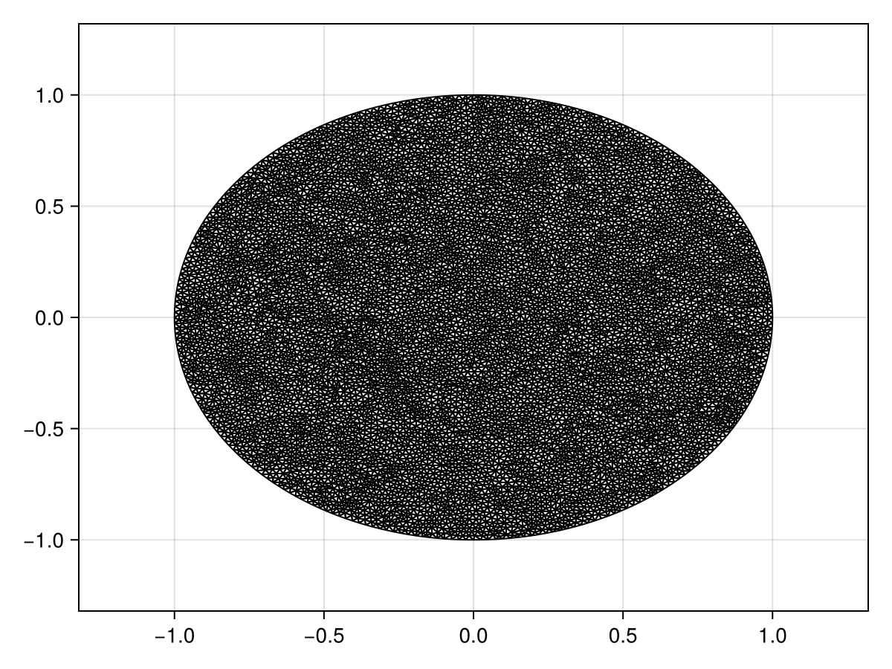

Reaction-Diffusion Equation with a Time-dependent Dirichlet Boundary Condition on a Disk
In this tutorial, we consider a reaction-diffusion equation on a disk with a boundary condition of the form $\mathrm du/\mathrm dt = u$:
\[\begin{equation*} \begin{aligned} \pdv{u(r, \theta, t)}{t} &= \div[u\grad u] + u(1-u) & 0<r<1,\,0<\theta<2\pi,\\[6pt] \dv{u(1, \theta, t)}{t} &= u(1,\theta,t) & 0<\theta<2\pi,\,t>0,\\[6pt] u(r,\theta,0) &= \sqrt{I_0(\sqrt{2}r)} & 0<r<1,\,0<\theta<2\pi, \end{aligned} \end{equation*}\]
where $I_0$ is the modified Bessel function of the first kind of order zero. For this problem the diffusion function is $D(\vb x, t, u) = u$ and the source function is $R(\vb x, t, u) = u(1-u)$, or equivalently the force function is
\[\vb q(\vb x, t, \alpha,\beta,\gamma) = \left(-\alpha(\alpha x + \beta y + \gamma), -\beta(\alpha x + \beta y + \gamma)\right)^{\mkern-1.5mu\mathsf{T}}.\]
As usual, we start by generating the mesh.
using FiniteVolumeMethod, DelaunayTriangulation, ElasticArrays
r = 1.0
circle = CircularArc((0.0, r), (0.0, r), (0.0, 0.0))
points = NTuple{2, Float64}[]
boundary_nodes = [circle]
tri = triangulate(points; boundary_nodes)
A = get_area(tri)
refine!(tri; max_area = 1e-4A)
mesh = FVMGeometry(tri)FVMGeometry with 8882 control volumes, 17506 triangles, and 26387 edgesusing CairoMakie
triplot(tri)
Now we define the boundary conditions and the PDE.
using Bessels
BCs = BoundaryConditions(mesh, (x, y, t, u, p) -> u, Dudt)BoundaryConditions with 1 boundary condition with type Dudtf = (x, y) -> sqrt(besseli(0.0, sqrt(2) * sqrt(x^2 + y^2)))
D = (x, y, t, u, p) -> u
R = (x, y, t, u, p) -> u * (1 - u)
initial_condition = [f(x, y) for (x, y) in DelaunayTriangulation.each_point(tri)]
final_time = 0.10
prob = FVMProblem(mesh, BCs;
diffusion_function = D,
source_function = R,
final_time,
initial_condition)FVMProblem with 8882 nodes and time span (0.0, 0.1)We can now solve.
using OrdinaryDiffEq, LinearSolve
alg = FBDF(linsolve = UMFPACKFactorization(), autodiff = AutoFiniteDiff())
sol = solve(prob, alg, saveat = 0.01)retcode: Success
Interpolation: 1st order linear
t: 11-element Vector{Float64}:
0.0
0.01
0.02
0.03
0.04
0.05
0.06
0.07
0.08
0.09
0.1
u: 11-element Vector{Vector{Float64}}:
[1.2514323512504983, 1.2514323512504983, 1.2514323512504983, 1.2514323512504983, 1.2514323512504983, 1.2514323512504983, 1.2514323512504983, 1.2514323512504983, 1.0, 1.0732643239064652 … 1.0411088825243073, 1.2124074383219885, 1.038346850987382, 1.1515617433857885, 1.0440312538996877, 1.2024705734925751, 1.214040626817364, 1.0447287252654671, 1.0473709346026268, 1.2086984593813257]
[1.2640096957397973, 1.2640096957397973, 1.2640096957397973, 1.2640096957397973, 1.2640096957397973, 1.2640096957397973, 1.2640096957397973, 1.2640096957397973, 1.010049887789515, 1.0840488815266813 … 1.0515701001026814, 1.224599881613008, 1.048785985210664, 1.163137053931237, 1.0545269577679193, 1.214561293209784, 1.2262530853940332, 1.0552337821898121, 1.057891413278963, 1.2208479005569197]
[1.276714221582014, 1.276714221582014, 1.276714221582014, 1.276714221582014, 1.276714221582014, 1.276714221582014, 1.276714221582014, 1.276714221582014, 1.020202600320279, 1.0949465334264052 … 1.0621408926951645, 1.2369090019842934, 1.0593292691009124, 1.1748298631227896, 1.065127104687637, 1.2267715733476696, 1.238580530500473, 1.065841758832209, 1.0685248650443475, 1.233119846052187]
[1.2895472592320505, 1.2895472592320505, 1.2895472592320505, 1.2895472592320505, 1.2895472592320505, 1.2895472592320505, 1.2895472592320505, 1.2895472592320505, 1.0304585569591385, 1.1059536137246415 … 1.0728178678562736, 1.2493431200902056, 1.069977494564706, 1.1866405170523713, 1.0758344235692743, 1.2391028070769308, 1.2510300508739756, 1.076555039940944, 1.0792664236978184, 1.2455161547664297]
[1.3025086097319503, 1.3025086097319503, 1.3025086097319503, 1.3025086097319503, 1.3025086097319503, 1.3025086097319503, 1.3025086097319503, 1.3025086097319503, 1.0408172067446784, 1.1170710935278028 … 1.0836018549467192, 1.2619003928873067, 1.0807317503872558, 1.1985687101177065, 1.0866487043216522, 1.2515544409146864, 1.263601916998329, 1.0873744289865122, 1.0901160392931255, 1.2580349290018116]
[1.315600836429091, 1.315600836429091, 1.315600836429091, 1.315600836429091, 1.315600836429091, 1.315600836429091, 1.315600836429091, 1.315600836429091, 1.051280078228993, 1.1283018003279695 … 1.094495652693761, 1.2745826245693113, 1.0915957110307355, 1.2106168549739305, 1.0975721107074206, 1.264131036314212, 1.2763007985667265, 1.0983039826707541, 1.1010754154936995, 1.2706781285863058]
[1.3288250894743447, 1.3288250894743447, 1.3288250894743447, 1.3288250894743447, 1.3288250894743447, 1.3288250894743447, 1.3288250894743447, 1.3288250894743447, 1.061847857259637, 1.139647002795362 … 1.105500516861103, 1.287390624661684, 1.1025710251932157, 1.2227860341576655, 1.1086056135873854, 1.2768346399584942, 1.2891287908284312, 1.1093455211992351, 1.1121453167179698, 1.2834466328770662]
[1.34218247469491, 1.34218247469491, 1.34218247469491, 1.34218247469491, 1.34218247469491, 1.34218247469491, 1.34218247469491, 1.34218247469491, 1.07252120325347, 1.1511079207091148 … 1.1166176548187454, 1.3003251714929869, 1.113659278036445, 1.2350772884875274, 1.1197501464080277, 1.2896672196569448, 1.3020879082875199, 1.1205007946317669, 1.1233264779257683, 1.296341287343223]
[1.3556742613454642, 1.3556742613454642, 1.3556742613454642, 1.3556742613454642, 1.3556742613454642, 1.3556742613454642, 1.3556742613454642, 1.3556742613454642, 1.0833008730809477, 1.1626859541165175 … 1.1278484523709282, 1.3133871584190455, 1.1248622889893236, 1.2474918126021524, 1.1310067805675865, 1.3026310340366845, 1.3151804631666657, 1.1317718116651931, 1.134619742694831, 1.3093630624037067]
[1.369301718680686, 1.369301718680686, 1.369301718680686, 1.369301718680686, 1.369301718680686, 1.369301718680686, 1.369301718680686, 1.369301718680686, 1.0941876236125259, 1.1743825030648607 … 1.139194295321892, 1.3265774787956848, 1.1361818774807528, 1.2600308011401777, 1.1423765874643002, 1.3157283417248342, 1.3284087676885439, 1.1431605809963572, 1.1460259546028941, 1.3225129284774495]
[1.3830652805928898, 1.3830652805928898, 1.3830652805928898, 1.3830652805928898, 1.3830652805928898, 1.3830652805928898, 1.3830652805928898, 1.3830652805928898, 1.1051940830089093, 1.1861657126854925 … 1.15062731756888, 1.3399366611268435, 1.1475776220160245, 1.2726969380503197, 1.1538596943515316, 1.3289547817807787, 1.341745835233697, 1.1546327094632387, 1.15754778569898, 1.3358313622474707]fig = Figure(fontsize = 38)
for (i, j) in zip(1:3, (1, 6, 11))
ax = Axis(fig[1, i], width = 600, height = 600,
xlabel = "x", ylabel = "y",
title = "t = $(sol.t[j])",
titlealign = :left)
tricontourf!(ax, tri, sol.u[j], levels = 1:0.01:1.4, colormap = :matter)
tightlimits!(ax)
end
resize_to_layout!(fig)
figJust the code
An uncommented version of this example is given below. You can view the source code for this file here.
using FiniteVolumeMethod, DelaunayTriangulation, ElasticArrays
r = 1.0
circle = CircularArc((0.0, r), (0.0, r), (0.0, 0.0))
points = NTuple{2, Float64}[]
boundary_nodes = [circle]
tri = triangulate(points; boundary_nodes)
A = get_area(tri)
refine!(tri; max_area = 1e-4A)
mesh = FVMGeometry(tri)
using CairoMakie
triplot(tri)
using Bessels
BCs = BoundaryConditions(mesh, (x, y, t, u, p) -> u, Dudt)
f = (x, y) -> sqrt(besseli(0.0, sqrt(2) * sqrt(x^2 + y^2)))
D = (x, y, t, u, p) -> u
R = (x, y, t, u, p) -> u * (1 - u)
initial_condition = [f(x, y) for (x, y) in DelaunayTriangulation.each_point(tri)]
final_time = 0.10
prob = FVMProblem(mesh, BCs;
diffusion_function = D,
source_function = R,
final_time,
initial_condition)
using OrdinaryDiffEq, LinearSolve
alg = FBDF(linsolve = UMFPACKFactorization(), autodiff = AutoFiniteDiff())
sol = solve(prob, alg, saveat = 0.01)
fig = Figure(fontsize = 38)
for (i, j) in zip(1:3, (1, 6, 11))
ax = Axis(fig[1, i], width = 600, height = 600,
xlabel = "x", ylabel = "y",
title = "t = $(sol.t[j])",
titlealign = :left)
tricontourf!(ax, tri, sol.u[j], levels = 1:0.01:1.4, colormap = :matter)
tightlimits!(ax)
end
resize_to_layout!(fig)
figThis page was generated using Literate.jl.